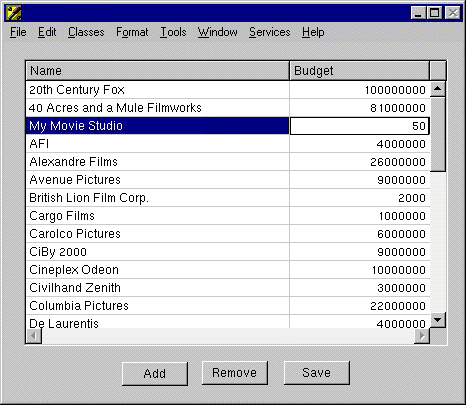

Choose FileTest Interface.
You will find that you cannot save your changes to the database. The save fails because the File's Owner object (an instance of a custom subclass of EOInterfaceController) is instantiated on the client side when the application is started. It has no corresponding Yellow Box object that is available during testing, and thus Interface Builder cannot test it. If you had any custom code, Interface Builder would also have no way to test it. To test the save function or any custom code, you must build the project and then run the application.
© 1999 Apple Computer, Inc.